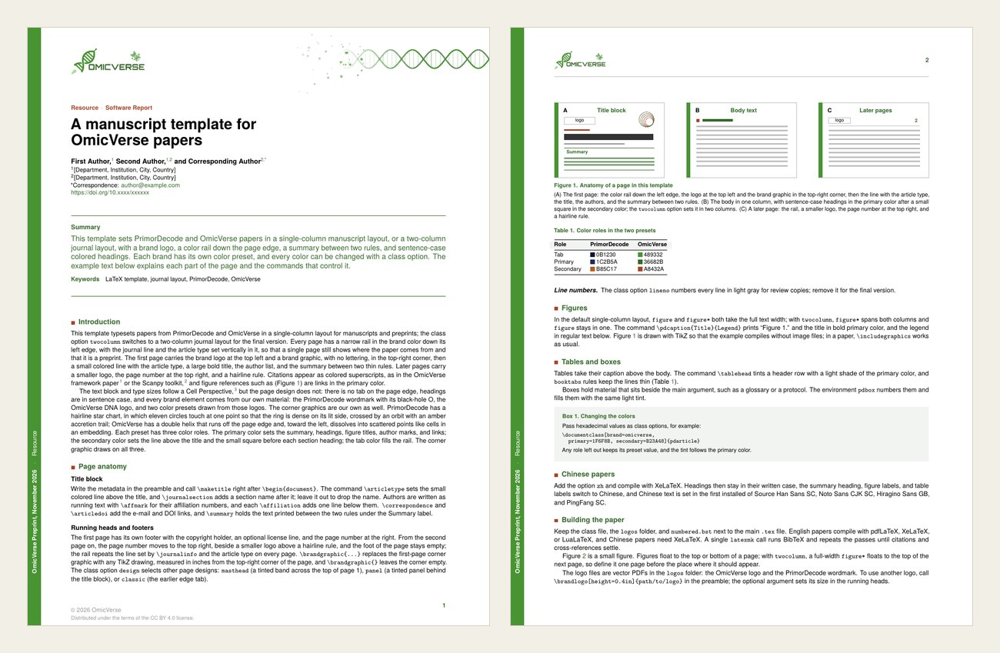
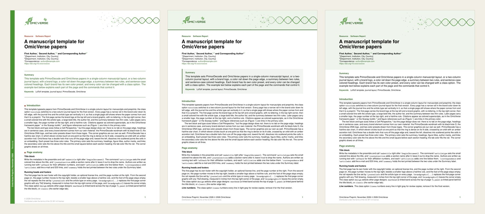
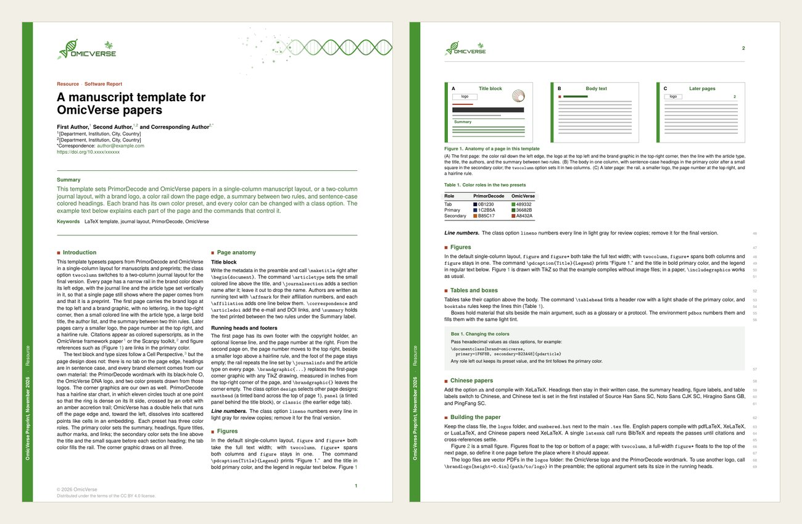
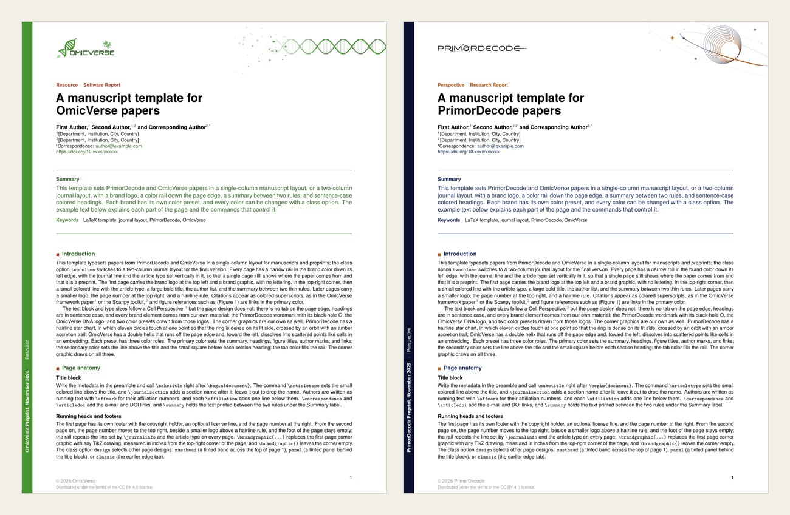
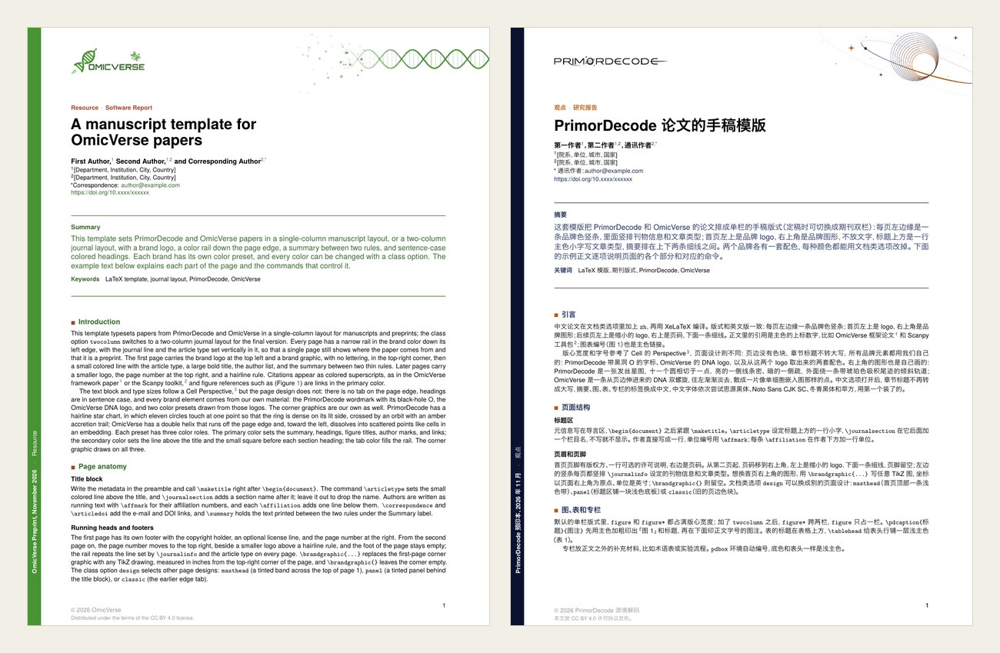

Resources
A LaTeX Template for OmicVerse Papers
Most OmicVerse projects end in a manuscript, and until now each group set its preprints in its own style. The new omicverse-latex-template repository gives community papers, preprints and reports one shared look. It holds a single LaTeX class, pdarticle, a numbered reference style, vector logos and worked examples in English and Chinese.

What is in the class
- Two layouts. A single-column manuscript by default, and a two-column journal layout with the
twocolumnoption. Both use the same type sizes: body 8.5/11 pt, title 20/21 pt. - Four page designs.
rail(the default),masthead,panelandclassic. - Brand presets.
brand=omicverseandbrand=primordecode, each with its own logo, colors and corner graphic. Every color can be overridden from the class options. - Chinese papers. The
zhoption, compiled with XeLaTeX. - Review copies. The
linenooption adds line numbers. - Ready-made elements. Clickable figure and table mentions, numbered boxes, tinted table heads and two-part figure captions.
Quick start
Download the ZIP above, or clone the repository:
git clone https://github.com/omicverse/omicverse-latex-template.gitCopy template.tex and start writing. Keep pdarticle.cls, numbered.bst and the logos/ folder next to your main .tex file, then compile:
# English papers: pdfLaTeX, XeLaTeX or LuaLaTeX
latexmk -pdf template.tex
# Chinese papers (the zh option) need XeLaTeX
latexmk -xelatex example-zh.texOn Overleaf, upload pdarticle.cls, numbered.bst and logos/ together with your .tex and .bib files. pdfLaTeX works for English papers; set the compiler to XeLaTeX for zh.
A minimal paper looks like this:
\documentclass[brand=omicverse]{pdarticle}
\journalname{OmicVerse}
\articletype{Research Article}
\journalinfo{OmicVerse Preprint, \today}
\copyrightholder{\the\year\ OmicVerse}
\title{Title of the paper}
\author{First Author,\affmark{1} and Last Author\affmark{1,*}}
\affiliation{1}{[Department, Institution, City, Country]}
\correspondence{author@example.com}
\summary{Summary text.}
\keywords{keyword one, keyword two}
\bibliographystyle{numbered}
\begin{document}
\maketitle
\section{Introduction}
Text.\cite{zeng2024omicverse}
\bibliography{example}
\end{document}Page designs
Pick a design with design=. Each image below is page 1 of the same example.

railputs a brand-color rail down the left edge of every page, with the journal line and article type set vertically in it. The summary sits between two rules.mastheadruns a tinted band across the top of page 1 for the logo and the brand graphic, and puts the summary in a tinted box.panelsets a tinted panel behind the title block on page 1 and a thin tinted strip on later pages.classickeeps the earlier design for compatibility. It is not recommended for new papers.
Later pages in every design carry a small logo at the top left, the page number at the top right and a hairline rule.
Two columns and line numbers

twocolumn sets two columns with a 13 pt gap. A full-width figure* floats to the top of the next page, so define it one page before the place it should appear. lineno puts small gray line numbers in the right margin, or on the outer side of each column in the two-column layout.
Your own colors and logo

Each preset has three color roles: tab for the rail, primary for the summary, headings, figure titles and links, and secondary for the article type and the marker before each heading. Override any of them from the class options, for example primary=1F6F8B, secondary=B23A48, tab=1F6F8B. Roles you leave out keep the preset. \brandlogo[height=0.4in]{path/to/logo} swaps the logo, and \brandgraphic{...} replaces the TikZ corner graphic. For OmicVerse that graphic is a DNA helix that fades into a scatter of points, like a single-cell embedding.
Chinese papers

With zh, headings are never upper-cased, the labels become 摘要, 图, 表, 专栏, 通讯作者 and 参考文献, and line spacing widens by 1.08×. The CJK font is the first one installed of Source Han Sans SC, Noto Sans CJK SC, Hiragino Sans GB and PingFang SC.
License
pdarticle.cls and the example and template files are distributed under the LaTeX Project Public License 1.3c or later. numbered.bst is based on model6-num-names.bst from Elsevier's elsarticle bundle, also under the LPPL. The OmicVerse and PrimorDecode logos belong to their owners and are not covered by the LPPL.
Questions and improvements are welcome as issues or pull requests on the repository.